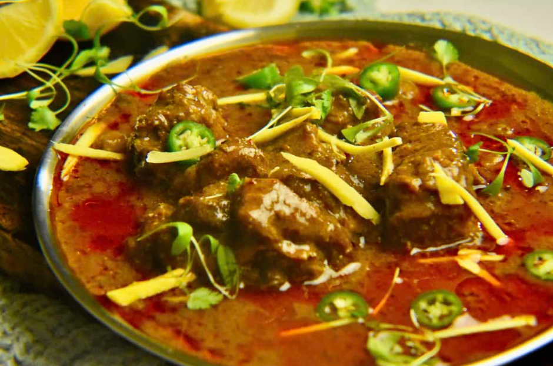

A classic Nihari is a rich, slow-cooked meat stew, often made with beef or mutton, flavored with a unique blend of spices and thickened with wheat flour. The process generally involves making a homemade spice mix, searing the meat, slow-cooking it until tender, and then thickening the gravy.

Ingredients
1.5 tbsp coriander seeds
1.5 tbsp fennel seeds (saunf)
1.5 tsp whole black peppercorns
1.5 tsp whole cloves
0.5 tbsp cumin seeds
1 cinnamon stick (1-inch piece)
2-3 pieces of mace
3 black cardamoms
4-6 green cardamoms
1 small piece of dried ginger (or ½ tbsp ginger powder)
Prepare the Nihari Masala: Dry roast all the whole spices listed for the masala in a pan over low heat until fragrant. Let them cool, then grind them into a fine powder using a spice grinder. Set aside.
Sear The Meat: In a heavy-bottomed pot or pressure cooker, heat the ghee or oil. Add the meat chunks and brown them well on all sides for about 8 minutes.
Cook the Meat: Add ginger and garlic paste and cook for another minute until the raw smell disappears. Stir in the salt, red chili powder, Kashmiri chili powder, coriander powder, turmeric powder, and the prepared nihari masala powder. Mix well.
Slow Cook: Add enough hot water to completely cover the meat and bring it to a boil. Reduce the heat, cover the pot, and let it simmer gently for 3-4 hours, or until the meat is very tender and nearly falling off the bone. If using a pressure cooker, cook for about 20-25 minutes after the first whistle.
Separate the Tarry/Rogan: Once the meat is cooked, you will notice a layer of oil (known as tarry or rogan) on top of the gravy. Gently skim this oil off and reserve it for later use. This ensures the final dish isn't too oily.
Thicken the Gravy: Gradually pour the wheat flour slurry (flour mixed with cold water) into the stew while stirring continuously to prevent lumps. Cook for another 6-8 minutes on a low flame until the gravy thickens to your desired consistency.
Finish and Serve: Pour the reserved tarry back into the pot. Garnish generously with fresh coriander, julienned ginger, green chilies, and fried onions. Serve hot with naan, kulcha, or chapati and a squeeze of lemon juice.